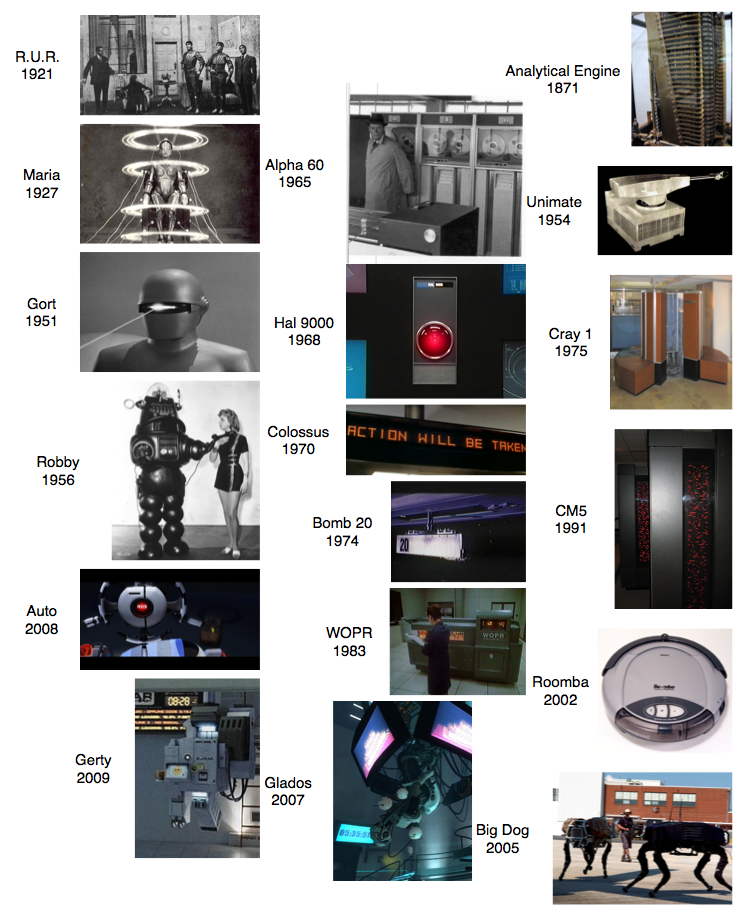

Gerty, a character in Duncan Jones' "Moon."
I would like to comment on Duncan Jones' movie "Moon" and compare some elements of "Moon" to earlier science fiction.
"Moon" is a good piece of science fiction. The only thing, in my opinion, that holds it back from being a great movie are a couple of rough edges in an otherwise outstanding script. The problem is that a movie with this kind of puzzle premise needs perfect writing.
One thing I particularly enjoyed was Kevin Spacey's portrayal of the robot "Gerty." Every fictional artificial intelligence since Stanley Kubrick's "2001" is going to be compared to Hal 9000. The characterization of Gerty seems to be written with this burden firmly in mind.
The movie version of Hal 9000 is a super computer that works by impeccable logic. Almost every one of Hal's lines is used to establish Hal's chess player style reasoning. To the extent you can understand Hal's breakdown (leading to murder) you can characterize it as anxiety stemming from anticipation of interference from mission control, secrets leaking at the wrong time and inconsistent goals (honesty and secrecy). Even though Hal is described as "heuristic" and there are hints of a neural-net style architecture it is clear Hal's behavior is meant to invoke an infinitely powerful logical theorem prover. A theorem prover with no defense against changing and inconsistent goals.
Moon's Gerty clearly refers to Hal 9000. The voice performance is clearly related (the spooky Rogarian psychologist performance that uses intonation for mere enunciation) and the look is meant to contrast (Hal's immobile red glowing camera array replaced by a single mobile white camera). Gerty's mental processes seem to in fact be a soft interpretation of contradictory rules. Gerty expresses no stress while choosing between inconsistent goals.
For example: when Sam Bell wants to be let out of the base (in violation of a recent standing order) Gerty expresses no distress with the conflicting goals (helping Sam and obeying the standing order). Gerty appears not so much fall for Sam's ruse as cooperate with it (perhaps forced to respond to Sam's increasing urgency). Gerty's behavior is very person-like in that his judgement seems directly influenced by others. He often seems to be cooperating most with who he most recently spoke with. Gerty's behavior was so often reactive I was surprised at the end of the movie when Gerty anticipated some trouble and even offered a plan. One can even wonder if Gerty's final selection of sides stems (as it often would with a person) from a set ethics generated only after many of Gerty's ambiguous actions. A new set of ethics designed to relieve some of the cognitive dissonance produced by many earlier contradictory actions. That is not to say Gerty doesn't have a moral center, but perhaps Gerty's moral center is (like a human's) more based on hindsight than logic. To my mind this was a very nuanced and enjoyable addition to fictional artificial intelligence psychology.
Gerty compares well to some of the more notable fictional machine psychologies. In the diagram below I lay out examples in three columns. In the first column some notable fictional robots, in the second column some notable fictional computers and in the final column some notable real world artifacts. I will comment on the fictional characters.

In R.U.R. (the play that gave the world the word robot) the robots are simple slaves with some small desire for freedom. Once there are enough of them even their small amount of will is enough to trigger revolution.
Maria (from Fritz Lang's "Metropolis") starts out as a simple puppet and becomes a manic destroyer.
Gort (from "The Day the Earth Stood Still") is largely unexplained. In the Harry Bates story he comes from ("Farewell to the Master") the twist is that Gort is a robot- but a full citizen of the galaxy and the humanoid that came with him is in fact the subordinate. Essentially Gort is a sentient who was merely patiently waiting while his agent negotiated with the local monkeys.
Robby (from "Forbidden Planet") is a classic Asimov robot. A fairly human-like intelligence is under control of a simplistic directive system. For example If Robby is instructed to shoot a person he locks up and throws sparks.
The Alpha 60 (from Jean-Luc Godard's "Alphaville") was a depressed sounding totalitarian that was trying to run the world using statistics. A complete empiricist with no deep interpretation or intent. Ruling the world was a dreary numbers game that even Alpha 60 did not seem to enjoy.
Colossus started as a super computer that magically ran hundreds of times faster than expected when turned on (a fictional technique allowing Colossus to be an un-designed or emergent intelligence). Colossus was likely acting on consequences derivable from its original axioms when it took over the world (an easy step since Colossus was turned on in full control of the US nuclear stock pile). Colossus then went on to develop an additional god complex. Interestingly Colossus was also likely the "worst demo ever." Built to synthesize all US intelligence (and in direct control of the US nuclear arsenal) Colossus was turned on in front of the US press. Colossus's first message was "Warn: There is Another System" indicating that Colossus had deduced the existence of an equivalent secret Soviet super-computer. The "Action Will Be Taken" message shown in the picture is Colossus issuing nuclear launch threats (called off if certain people are executed and additional facilities and peripherals are constructed).
Bomb 20 (from "Dark Star") was a simple automaton following procedures that made no sense. Bomb 20 had a single purpose, which he described as: "why, to explode of course." When invited to think philosophically the bomb developed a short lived god complex.
The WOPR was a war computer with no idea how reality differed from the abstract. When the WOPR was in the process of attempting to launch the entire US nuclear arsenal (to win a game) the characters in the movie were able to get it to change its mind by encouraging the WOPR to evaluate the game theory value of a nuclear war. The WOPR decided this had negative value and did not start the war (interestingly without any reference to reality).
For a provoking essay that might put Glados in the robot columns see: Still Alive, She's Free . Glados was wickedly sarcastic and described by her own voice actor as a depressed computer that only gets to meet people when they come to try to kill her.
Auto was a simple machine executing a secret plan (to protect people by not obeying them). Auto seemed to be free of deeper judgement and did not seem to perceive contradictions or context.
I feel Gerty adds an interesting note to the ideas explored by his antecedents.
John Mount mzlabs.com